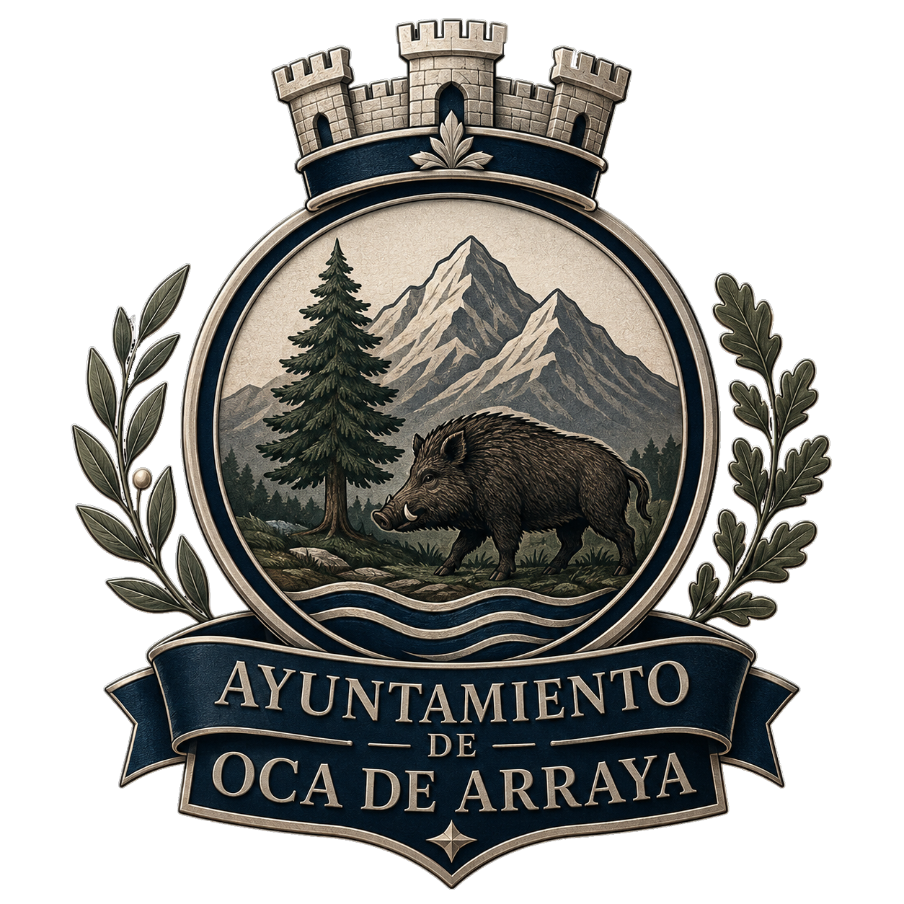

INTRANET MUNICIPAL · RED INTERNA DE SERVICIOS
Acceso a los sistemas y servicios electrónicos del Ayuntamiento.
Sistema interno de investigación y consulta de expedientes policiales.
Acceso a los servicios y registros sanitarios municipales.
Sistema de cámaras de seguridad municipal.
Documentación y registros administrativos.